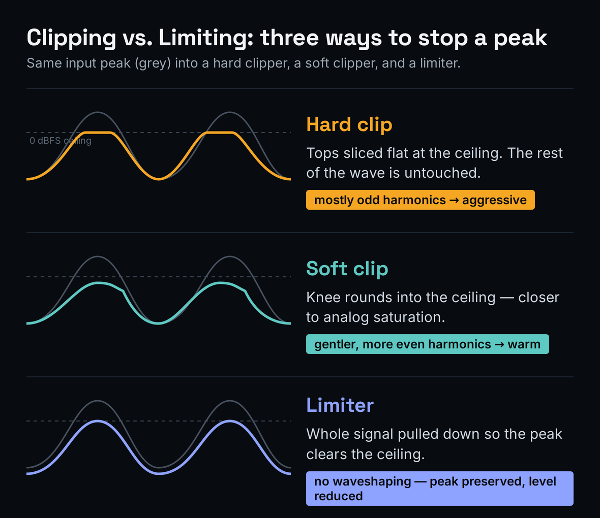
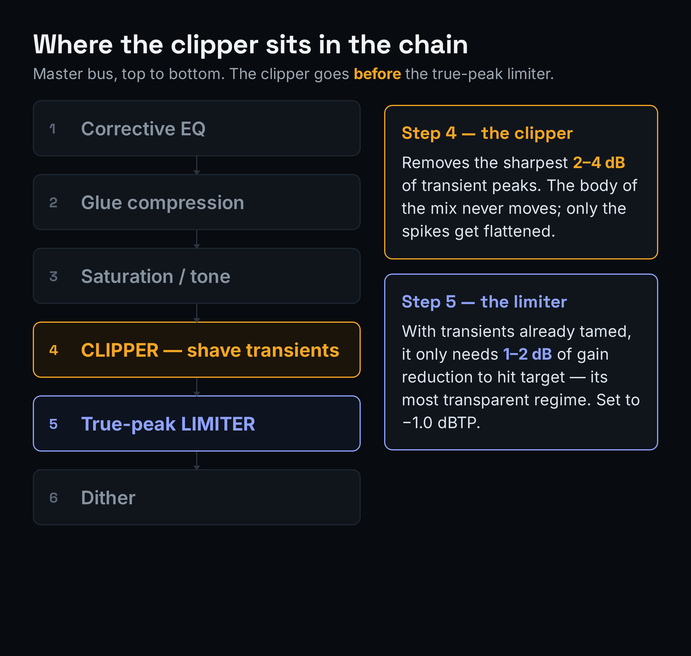
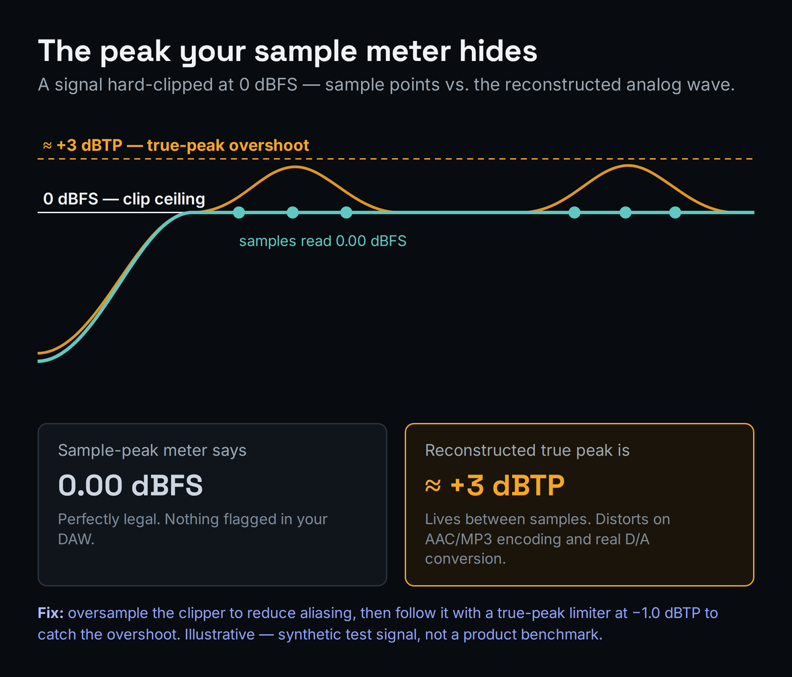

The best clipper plugin for most producers is a free one. Venn Audio Free Clip 2, Kazrog KClip Zero, and the open-source PeakEater are genuinely pro-grade and clip transparently with oversampling. Spend money only when you need more: SIR Audio Tools StandardCLIP ($25) for maximum-transparency mastering, Kazrog KClip 3 ($39.99) for multiband and mid/side, or Schwabe Digital Gold Clip ($249) for finishing character. The single mechanic that matters more than which plugin you buy: put the clipper before your limiter, not instead of it. Check the result against streaming targets with our Loudness Penalty calculator.
This article contains affiliate links. If you purchase through our links, we may earn a commission at no extra cost to you. This does not affect our editorial independence — every pick here is chosen on merit, and the free options are recommended precisely because they cost nothing.
Updated June 2026 — Clipping is the loudness technique of the moment, and the search results for "best clipper plugin" are full of rankings assembled by ear alone. This guide takes a different angle. Before we rank anything, we teach the one mechanic that separates producers who get clean, competitive loudness from those who just crush their masters flat: a clipper is not a louder limiter, and it does its best work in front of the limiter, shaving the sharpest transients so the limiter has less to do. Get that order right and a free clipper will beat a $250 one used wrong.
We also measured. Most roundups assert that clipping "adds harmonics" and move on. We ran a controlled synthetic signal through a hard-clip process and looked at what actually happens to true-peak and inter-sample peaks — the distortion your meters do not show you. The headline result, illustrated below, is the thing nobody mentions: a clipper sitting exactly at 0 dBFS on its sample meter can be generating peaks more than 3 dB above the ceiling between samples. That is why oversampling and a true-peak-safe output stage are not optional. If you only read one section, read the next one.
Clipping vs. Limiting: The Mechanic That Wins Loudness
A limiter and a clipper both stop your signal from exceeding a ceiling, but they do it in opposite ways, and the difference is the entire reason clippers exist. A limiter is a dynamics processor: when a peak threatens to cross the ceiling, it turns the whole signal down for a moment, then lets it back up. The amount and speed of that gain movement is governed by attack, release, and lookahead. Push a limiter hard and those gain movements stack up into pumping, dulled transients, and the squashed "limiter sound." A clipper has no attack, no release, and no gain movement at all. Think of it as a limiter with an infinitely fast attack and zero release: instead of ducking the signal, it simply shaves the tops off the waveform peaks at the ceiling and leaves everything below untouched. The body of your mix never moves. Only the spikes get flattened.
That flattening is not free — it is distortion, by design. When you slice the rounded top off a waveform you create new harmonic content. A hard clip (a brick-wall corner) generates predominantly odd harmonics and sounds aggressive; a soft clip (a rounded knee that eases into the ceiling) generates gentler, more even harmonics and sounds warmer, closer to analog saturation. This is why a clipper doubles as a saturation device: drive a soft clipper lightly and you get harmonic richness without obvious peak-shaving. For a precise definition of the underlying process, see the Bible entry on clipping.
The practical payoff is loudness efficiency. Transient peaks — the initial spike of a kick, a snare, a plucked string — are short, loud, and contain very little perceived loudness. They are the first thing that hits a limiter's ceiling, so they are what forces the limiter to work and what eats your headroom. If you shave 2–3 dB off those transients with a clipper first, the limiter sees a tamer signal, applies far less gain reduction, and the master comes out louder and cleaner than limiting alone could achieve. This is the chain almost every competitive modern master uses, and it is why "the loudest limiter" is the wrong thing to shop for. The right question is "what removes the transients before the limiter ever sees them."

A peak hitting three processors: the hard clipper shaves the top flat (odd harmonics), the soft clipper rounds the knee (gentler, even harmonics), and the limiter pulls the entire signal down. Illustrative schematic, not a measurement.
It helps to understand why the harmonic character differs, because it dictates when to use each shape. A hard clip is mathematically a symmetrical flattening: the positive and negative peaks get the same sharp corner, and symmetrical waveshaping produces odd-order harmonics (3rd, 5th, 7th). Odd harmonics are the ones our ears read as "edgy" or "buzzy," which is why a hard clip can sound aggressive — useful when you want bite, risky when you want polish. A soft clip eases into the ceiling along a curve, and the gentler, more gradual the curve, the more it behaves like analog saturation, weighting toward lower-order and even harmonics that read as "warm" and "thick." Some clippers, like StandardCLIP's Soft Clip Pro, deliberately model the half-range compression of overdriving a converter, which sits between pure clipping and pure saturation. Knowing this, you reach for hard clipping when you want the cleanest possible peak removal at small amounts, and soft clipping when you want the clip itself to contribute tone.
One more distinction worth internalizing: because a clipper does not move gain, it has no "release time" to mistune and no pumping to introduce. That makes it forgiving on dense, transient-heavy material like drum buses and 808s, where a limiter pushed equally hard would breathe audibly. The trade is that a clipper's distortion is always present and always audible if you overdo it — there is no smart algorithm hiding it. Clipping rewards restraint and a good output meter, which is exactly what the measurement section is about.
Where a Clipper Sits in Your Loudness Chain
Order of operations is where most producers leave loudness on the table. The clipper belongs near the end of your chain but before the final true-peak limiter. A typical competitive master bus runs: corrective EQ → glue compression → tonal/saturation moves → clipper → true-peak limiter → dither. The clipper knocks down the sharpest peaks; the limiter then acts as a transparent safety net and final ceiling rather than the main loudness workhorse. With the transients already tamed, the limiter often only needs 1–2 dB of gain reduction to hit a streaming target, which is the regime where limiters sound their most transparent.
This division of labor is the single most useful thing in this guide, so it is worth stating the failure modes plainly. If you clip after the limiter, you re-introduce peaks the limiter already controlled and you are clipping a signal that has no transient information left to shave — you just add grit. If you skip the clipper and ask the limiter to do everything, it works harder, pumps more, and dulls your transients to reach the same loudness. And if you clip too hard in a misguided race for loudness, you push past pleasant saturation into audible distortion and you flatten the very transients that make a mix feel punchy. The clipper is a scalpel for the top 2–4 dB of peaks, not a hammer for the whole master.
A worked example makes the efficiency concrete. Say your premaster peaks at −6 dBFS and you want to hit −9 LUFS for a competitive electronic master. Limiting alone, you would push perhaps 7–8 dB into the limiter, and the loud transient hits — kicks, snares, hat spikes — would drive most of that gain reduction, so the limiter would be working in its least transparent regime and your transients would dull noticeably. Insert a clipper first and shave 3 dB off just those transient peaks, and the signal arriving at the limiter is markedly flatter; now the limiter only needs to do 4–5 dB of work to reach the same loudness, the transients survive, and the whole master sounds louder and more open. You did not buy a better limiter — you removed the limiter's hardest job before it began. That is the entire trick, and it is why engineers who clip can routinely beat engineers who only limit at the same target.
How much to clip is a judgment call you make with your ears and your meters, but a reliable starting discipline is to set the clipper's ceiling at 0 dBFS, raise input drive until you see roughly 2–4 dB of peaks being shaved on the loudest sections, then back off until the distortion is inaudible on full-range monitoring. The clipper's job is to make the limiter's job easy. If you want the broader context of how this fits the whole mastering process, our walkthroughs on how to master a song and how to master for streaming place the clipper inside a complete chain, and mixing headroom explained covers leaving the right room before you ever get here.

The clipper sits before the true-peak limiter: it shaves the sharpest transients so the limiter only needs 1–2 dB of gain reduction to reach the target. Illustrative schematic, not a measurement.
One adjacent technique that pairs naturally with clipping is good gain staging earlier in the mix, so you arrive at the master bus with controlled levels and the clipper has a sensible amount of peak to remove rather than a wildly inconsistent signal. If your mix simply will not get loud no matter what you do at the master, the cause is usually upstream — our guide on why your mix is not loud is the better first stop than reaching for more clipping.
Oversampling, Aliasing, and the Peaks Your Meter Hides
Here is the part the listening-only roundups cannot tell you, because it is invisible without measurement. Clipping is a non-linear process, so it generates new harmonics — and some of those harmonics land above the Nyquist frequency, where they cannot be represented at your sample rate and instead fold back down into the audible band as inharmonic aliasing. Aliasing is the metallic, harsh quality that makes a badly-implemented clipper sound cheap. Oversampling fixes this: the plugin temporarily runs the clipping math at a higher internal sample rate (2×, 4×, 16×, up to 256× on StandardCLIP), so the new harmonics have room to exist without folding, then filters and downsamples back. More oversampling means less aliasing, at the cost of CPU and a little latency.
The second, sneakier problem is inter-sample peaks. We ran a synthetic test to make it concrete. We took a tone-rich signal, drove it 6 dB into a hard clipper with the ceiling at 0 dBFS, and then measured the true peak by reconstructing the analog waveform the way a DAC or a lossy codec does. The sample-peak meter read exactly 0.00 dBFS — perfectly legal, nothing flagged. The reconstructed true peak was about +3 dBTP. In other words, the clipping process manufactured peaks more than 3 dB above the ceiling that live between the samples, where your meter never looks. Encode that to AAC or MP3, or play it through a real converter, and those inter-sample peaks distort. This is why a clipper used naively can sound great in your DAW and fall apart on Spotify.

Synthetic signal hard-clipped at 0 dBFS: the sample meter reads 0.00 dBFS while the reconstructed inter-sample peak overshoots to ≈ +3 dBTP. Illustrative — synthetic test signal, not a product benchmark.
Not all oversampling is equal, which is part of what separates a $25 clipper from a free one. The quality depends not only on the factor — 2× versus 256× — but on the steepness and phase behavior of the filters used to up- and down-sample. StandardCLIP exposes this directly, letting you choose between a minimum-phase filter (no added latency, but some phase shift near the top of the band) and a linear-phase filter (preserves phase relationships perfectly, at the cost of latency), and to adjust filter quality and cutoff. For a final mastering clip you generally want high oversampling with a clean filter; for tracking or sketching where latency matters, a lower factor with minimum-phase keeps things responsive. The reason higher oversampling costs CPU is that the plugin is literally doing the clipping math several times more often, so it is normal to monitor at a low factor and switch to a high one only for the offline render — a feature KClip 3, PeakEater, and StandardCLIP all support.
One workflow wrinkle worth knowing: linear-phase oversampling and high factors add latency, which your DAW compensates for on playback but which can complicate live monitoring and recording. The practical answer is the offline-render split mentioned above — keep a low, minimum-phase factor while you are working and arranging, and only switch to the high, linear-phase setting for the final bounce, where latency is irrelevant because nothing is being played in real time. If a clipper does not let you change oversampling per-mode like this, simply add it last and raise the factor only when you render. None of this is exotic; it is the same monitor-low, render-high discipline you would use with a linear-phase EQ or a heavy convolution reverb, and it costs nothing but a moment of attention before you export.
The takeaways are practical. First, enable oversampling on your clipper for any release-bound master; the CPU cost is trivial in an offline render and the aliasing reduction is audible. Second, never treat a clipper as your final ceiling — follow it with a true-peak-aware limiter set to −1.0 dBTP, which catches exactly the inter-sample overshoot the clipper creates. The relevant Bible entries on true-peak limiting and headroom go deeper, and if you are unsure what loudness number you are even aiming for, start with what LUFS means. Verify the finished file with our LUFS target reference and the pre-delivery checklist before you upload anything.
The Best Clipper Plugins, Tested for Loudness
The picks below are organized by what they are for, not by a popularity score. We lead with the free options because, candidly, most producers do not need to spend anything to clip well — and we say so in the verdict. Prices are in USD and were verified on each vendor's store in June 2026; plugin prices move, especially around sales, so confirm at purchase.
How we evaluated them: a clipper earns a place here on four axes, weighted in roughly this order. First, transparency — at matched peak-shaving, does it stay clean or does it smear and alias? Second, oversampling quality, since that is the single biggest determinant of whether a clipper sounds professional or cheap when driven, and it is the thing the spec sheet's headline factor (16×, 32×, 256×) only half-tells you, because filter design matters as much as the number. Third, feature fit — multiband, mid/side, metering, and mode count, judged against whether a real workflow actually needs them rather than treating more as automatically better. Fourth, price-to-value, where free that does the core job beats paid that adds options you will not use. We deliberately did not rank by interface polish or brand: a utilitarian free plugin that nulls against a paid one belongs above a prettier tool that does the same thing for money. With that lens, the field sorts cleanly into “free and excellent for the common case” and “paid for a specific reason,” which is exactly how the list is ordered.
Venn Audio Free Clip 2 — best free all-rounder (Free)
Free Clip 2 is the free clipper we reach for first. It offers several waveshaping curves from transparent hard clipping through progressively softer, more saturated knees, oversampling to control aliasing, a zoomable waveform display so you can see exactly how much you are shaving, and a fully resizable interface — all genuinely free as part of Venn's Free Suite, with no account wall or feature lockout. Standout: the dual-direction waveform zoom makes it the most confidence-inspiring free clipper to dial in by eye. The honest catch: it tops out at stereo broadband clipping — no multiband, no mid/side. Do not confuse it with Venn's paid V-Clip 2, which adds up to 512× oversampling, asymmetric clipping, and multiple clipper stages; the free one is the one most people want. Price: Free.
Kazrog KClip Zero — the pro algorithm, free (Free)
KClip Zero runs the exact same core clipping algorithm as the paid KClip 3, stripped to a single mode with fixed oversampling (2× while monitoring, 16× on offline render) and an excellent real-time visualizer. It is the most transparent free option for straightforward peak-shaving on a master or a bus, and because it shares the paid engine it is the cleanest way to audition the Kazrog sound before deciding whether you need the full version. Standout: reference-grade transparency and a clear clipping visualizer in a foolproof one-knob layout. The honest catch: one mode only, no multiband, no metering beyond the visualizer. Price: Free.
PeakEater — best free cross-platform / Linux option (Free, open-source)
PeakEater is a free, open-source wave-shaper that runs everywhere the others do not: Windows, macOS, and Linux, in VST3, AU, LV2, and CLAP formats. It offers six clipping functions from hard clip through arctangent soft clip, oversampling from 2× to 32×, an input/output gain link, a mix control for parallel use, and an RMS "eaten" meter that shows how much you are removing. Its developer openly built it by combining ideas from KClip 3 and Venn's Free Clip, and it shows. Standout: the only serious free clipper with native Linux and CLAP support, and it is genuinely capable, not a toy. The honest catch: Linux and CLAP builds are marked experimental, and the UI is utilitarian. Price: Free (open-source).
Kilohearts Clipper — best free Snapin for modular chains (Free)
If you live in Kilohearts' Snap Heap or Multipass, the free Clipper Snapin is a simple, clean, high-quality clipper that drops into a modular routing chain alongside the rest of the free Kilohearts ecosystem. On its own it is a no-frills hard/soft clipper, but inside a Snapin host it becomes a building block you can place per-band or in parallel with everything else Kilohearts offers free. That modularity is the real draw: in Multipass you can split your signal into frequency bands and drop a Clipper Snapin only on the band that needs it, which is a poor-man's multiband clipper assembled entirely from free parts. For producers already invested in the Kilohearts workflow it is a natural, zero-cost addition; for everyone else it is less of a destination than Free Clip 2 or KClip Zero. Standout: modular flexibility for free, including improvised multiband inside Multipass. The honest catch: it shines inside the Kilohearts host environment; as a standalone plugin it is intentionally basic. Price: Free.
SIR Audio Tools StandardCLIP — the transparency benchmark ($25)
If you are going to spend money for transparency, StandardCLIP is the reference. It offers oversampling up to 256× — by a wide margin the highest of any major dedicated clipper — with a choice of linear-phase or minimum-phase filters and full control over filter quality, plus three modes: Hard Clip, Soft Clip Classic, and the clever Soft Clip Pro, a half-range compression mode that mimics the gentle saturation of pushing a Lavry-style converter. At $25 it is the easiest recommendation on this list for clean mastering peak control. Standout: unmatched oversampling quality and the converter-style Soft Clip Pro mode, for the price of a couple of coffees. The honest catch: no multiband, no mid/side, no built-in LUFS metering, and a utilitarian interface without draggable waveform thresholds. Price: $25 (current version 1.4); a newsletter signup discount is frequently available.
Kazrog KClip 3 — the do-everything pick ($39.99)
If StandardCLIP is a precision scalpel, KClip 3 is the full surgical kit. It packs eight clipping modes (Smooth, Crisp, Tube, Tape, Germanium, Silicon, Broken Speaker, Guitar Amp), a true four-band multiband mode so you can clip the low end differently from the highs, mid/side processing, oversampling up to 32×, and built-in EBU/LUFS metering so you can target a streaming level inside the plugin. It runs on Windows, macOS, and Linux, is a perpetual license with no iLok and no subscription, and is the version to buy when one clipper needs to cover mastering, drum-bus character, and creative sound design. Standout: multiband plus mid/side plus eight characters and LUFS metering in one plugin — nothing else near this price matches it. The honest catch: the feature count has a learning curve, and dialing in optimal multiband settings takes experience; on macOS multiband mode wants a 1024-sample host buffer. Price: $39.99 (current version 3.6.7; review sites still quote an old $69 list, but $39.99 is the standing store price). KClip Zero, above, is the free way to try the engine first.
Schwabe Digital Gold Clip — premium mastering character ($249)
Gold Clip is the boutique, expensive end of the category, built over three years by Grammy-nominated mastering engineer Ryan Schwabe to emulate two of his favorite hardware mastering converters. Beyond a clean clipper with Modern, Classic, and Hard modes, it adds two processors you will not find elsewhere: Gold, a "loudness saturation" stage that amplifies low-level detail non-linearly while leaving peaks intact, and Alchemy, a dynamic high-frequency contour that tames the harshness clipping can introduce as the signal approaches the ceiling. The pack now includes a streamlined Gold Clip Track companion for use on individual channels. Standout: the Gold and Alchemy stages together do something genuinely hard to replicate by stacking conventional tools — a density and finish prized on commercial masters. The honest catch: at $249 it is many times the price of StandardCLIP or KClip 3, and the marginal benefit is real but subtle. Audition the trial honestly before paying the premium; most producers do not need it. Price: $249 (or rent-to-own at $25/month).
Two more worth a slot
Beyond the core picks, two paid clippers earn a mention for specific jobs. Newfangled Audio Saturate (~$49) is the only widely-available spectral clipper: it distributes the clipping across the frequency spectrum intelligently, which lets you drive harder without the mud that broadband clipping creates on dense material. Brainworx bx_clipper (~$39.99) is a focused mid/side mastering clipper with smart automation — a good buy if mid/side is the one feature you want and you do not need KClip 3's full toolkit. Both are situational rather than first recommendations.
Clipper Plugin Comparison Table
The table below summarizes the picks on the axes that actually decide which one fits your job: maximum oversampling, whether it offers multiband and mid/side, built-in loudness metering, price, and the use case it is best at. "Best for" is the column to read first.
| Plugin | Max oversampling | Multiband | Mid/Side | LUFS metering | Price | Best for |
|---|---|---|---|---|---|---|
| Venn Free Clip 2 | Yes (broadband) | No | No | No | Free | Best free all-rounder |
| Kazrog KClip Zero | 16× (offline) | No | No | No | Free | Transparent free peak-shaving |
| PeakEater | 32× | No | No | No | Free | Cross-platform / Linux / CLAP |
| Kilohearts Clipper | Host-dependent | Via host | Via host | No | Free | Modular Snapin chains |
| SIR StandardCLIP | 256× | No | No | No | $25 | Maximum-transparency mastering |
| Kazrog KClip 3 | 32× | Yes (4-band) | Yes | Yes (EBU) | $39.99 | Do-everything single plugin |
| Schwabe Gold Clip | Yes (variable) | No | No | No | $249 | Premium mastering character |
Which Clipper for Which Job
Match the tool to the task rather than buying the most expensive option and hoping. For taming drum and 808 transients in the mix, almost any clipper works and free is plenty — Free Clip 2 or KClip Zero on the drum bus, soft-clip mode, shaving just the spikes, will tighten the low end and add glue without the pumping a compressor would introduce. For transparent peak-shaving on a master before the limiter, StandardCLIP's 256× oversampling is the cleanest paid choice and KClip Zero is the cleanest free one; the goal here is invisibility, so reach for hard or near-hard clipping with high oversampling and only 2–3 dB of reduction.
For frequency-dependent control on a master — say, clipping a boomy low end harder than the delicate highs — you need multiband, and that points squarely at KClip 3's four-band mode or a spectral approach like Newfangled Saturate; for the dynamics-side equivalent, our best multiband compressor plugins roundup covers per-band compression. For finishing character and density on a commercial master, where you want the clip to add a flattering color rather than disappear, Gold Clip's Gold and Alchemy stages or KClip 3's tube and tape modes are the tools. And for creative distortion as an effect — destroying a synth, fattening a vocal, abusing a drum loop — any soft clipper driven hard becomes a saturator; this is where the "clipper as saturation" idea pays off, and where a dedicated tool from our best saturation plugins roundup can complement or replace it and where the eight flavors in KClip 3 earn their keep. The point: most producers' real needs are covered by a free clipper plus, at most, a $25 one.
Two routing habits make all of this work better in practice. First, clip in stages rather than all at once: a gentle clip on the drum bus, another on the mix bus, and a final transparent shave on the master removes peaks gradually and sounds far cleaner than asking one clipper at the end to do 6 dB of work — the distortion is spread out and stays below the threshold of audibility at each stage. Second, when in doubt, prefer the cleaner, harder clip in small amounts over a heavy soft clip: a hard clip removing 2 dB is more transparent than a soft clip pushed to remove 5 dB, even though “soft” sounds gentler on paper. Reserve heavy soft clipping for when you actually want the colour as part of the sound, not as a peak-control afterthought. These two habits — stage your clipping, and use small amounts of the right shape — matter more to your final loudness and cleanliness than any difference between the plugins on this list.
Free vs. Paid: The Honest Verdict
Here is the part most affiliate roundups quietly avoid, because it works against the commission: in the clipper category, the free tools are not a compromise. They are pro-grade. A clipper is, at its mathematical core, one of the simplest processors in audio — a transfer function that flattens anything above a threshold — and the hard part is not the clipping but the anti-aliasing oversampling around it. The best free clippers solved that years ago. Venn Free Clip 2, Kazrog KClip Zero, and PeakEater all oversample competently, all clip transparently, and all produce masters indistinguishable from a paid clipper in a blind null test at matched settings. If your job is “shave 2–3 dB of transient peaks off a master or a bus before the limiter,” which is the job for the overwhelming majority of producers, you are completely covered for free. We want to be blunt about that because the honest recommendation saves you money you can spend on the parts of your chain that actually benefit from it.
So what does paid money buy? Three specific things, and you should only pay when you need one of them. The first is features the free tools genuinely lack: multiband clipping and mid/side processing. If you need to clip a boomy low end harder than fragile highs, or treat the stereo sides differently from the mono center, no free clipper does that well — KClip 3 at $39.99 is the answer, and it is a lot of capability for the price. The second is extreme transparency at the very edge of mastering: StandardCLIP's 256× oversampling with selectable linear- or minimum-phase filtering is measurably cleaner than anything free at aggressive settings on bright material, and at $25 it is a trivial upgrade for someone mastering for clients. The third is finishing character: Gold Clip's Gold density and Alchemy high-frequency taming are a colour, not a corrective — a flattering sound that a small number of mastering engineers will pay $249 for and most producers will never miss. Notice that none of those three is “clips better.” They are “clips with more options” or “clips with a specific flavour.” The base transparency ceiling was already reached by free software.
The decision, then, is not a price ladder you climb until you can afford the best. It is a fork. Start free — install Free Clip 2 or KClip Zero today and learn to clip well, because technique matters infinitely more than which plugin you own. Then buy only the specific capability your work demands: $25 to StandardCLIP if you master and want the cleanest possible peak control; $39.99 to KClip 3 if you need multiband or mid/side or want one plugin that does everything; $249 to Gold Clip only if you are a mastering engineer chasing a particular finish and you have auditioned the trial and heard the difference on your own material. For everyone else, the correct amount to spend on a clipper in 2026 is nothing, and the correct place to put your attention is the clipper-before-limiter order taught at the top of this guide. A free clipper used in the right place beats an expensive one used in the wrong place every single time.
Clipper vs. Limiter: Which to Reach For
Because clippers and limiters both enforce a ceiling, it is easy to assume they are interchangeable. They are not, and using the wrong one is a common loudness mistake. Reach for a limiter when you need a guaranteed, transparent ceiling for streaming compliance — the absolute last stage of your master, set to −1.0 dBTP, doing 1–2 dB of work. Reach for a clipper when you want to remove transient peaks efficiently and do not mind a touch of harmonic color — earlier in the chain, ahead of that limiter. The professional answer is almost always "both, in that order": the clipper shaves the spikes, the limiter catches what is left and guarantees the ceiling.
If you want a guaranteed brick-wall ceiling and clean true-peak compliance, that is a limiter's job, not a clipper's — our roundup of the best limiter plugins covers that side of the chain, and the FabFilter Pro-L 2 review looks in depth at the industry-standard true-peak limiter that most often sits after a clipper. Use a clipper to make the limiter's job easy; use the limiter to make the master safe. They are partners, not rivals, and the master limiter and loudness war Bible entries give the longer history of how this two-stage approach became standard practice.
Practical Exercises
- Load any free clipper — Free Clip 2 or KClip Zero — on a drum bus and set the ceiling to 0 dBFS. Slowly raise the input drive until the loudest hits show 2–3 dB of clipping on the visualizer.
- A/B against the bypass at matched level. Notice the kick and snare feel tighter and the bus sounds a little louder at the same fader position, without the pumping a compressor would add.
- Now push it twice as far and listen for the point where it stops sounding “tight” and starts sounding “crunchy.” That threshold is your taste calibration — everything useful happens below it.
- On a full mix, first reach your target loudness with a true-peak limiter alone. Note how much gain reduction it does and how the transients feel — this is your baseline.
- Now insert a clipper before the limiter, shave 2–3 dB of transient peaks, and pull the limiter back to the same loudness. The two-stage version should reach target with less limiter gain reduction and keep more punch.
- Confirm the true-peak result with our Loudness Penalty calculator, and cross-check the order against how to master for streaming.
- On a clipper that lets you toggle oversampling (StandardCLIP, PeakEater, or KClip 3), drive a bright, transient-heavy master hard with oversampling off and render it.
- Render again with oversampling at 16× or higher. Null the two files, or just listen on headphones for the harsh, metallic aliasing on cymbals and sibilance in the un-oversampled version.
- Check both renders against −1.0 dBTP using a true-peak meter and the LUFS target reference, then confirm the file passes the pre-delivery checklist before upload.